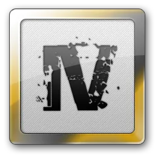
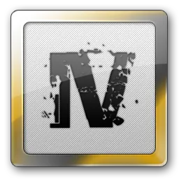

| Saya Mohammed Winston Fova Cilegon, 16 April Berdomisili di Padang, seorang desainer grafis dan UI/UX yang berpengalaman diberbagai project. Saya memiliki keahlian dalam merancang desain grafis, branding, dan UI/UX untuk berbagai jenis proyek, seperti website, aplikasi mobile dan media sosial. |
| 2017-2018 | 2019-2020 | 2021-RG |
|---|---|---|
| Sekertaris Osis masa Jabatan | Project server Vice Roleplay GTA San Andreas Multiplayer | Public Relation konten design of Ephorize Indonesia GTA V |
| Sekertaris Ambalan Budi Utomo | Project server Vice Roleplay GTA V FiveM | Marketing of raventirr. Fiverr, Intagram, Twitter, Discord and Website |
| Team Sosial media and Public Relation of Jogjagamers Reality Project |


 
